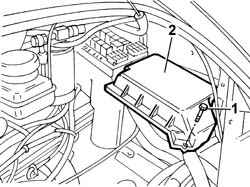
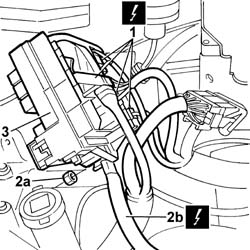

5505A13 SUPPLEMENTARY JUNCTION CONTROL UNIT IN ENGINE BAY - R R
- Path
- Procedures > 55 ELECTRICAL EQUIPMENT > 5505 INSTRUMENT/GUAGE ELECTRICAL WIRING > 5505A MULTI-FUNCTION COMPONENTS > 5505A13 SUPPLEMENTARY JUNCTION CONTROL UNIT IN ENGINE BAY - R R
- Kind
- repair procedure (removal / refitting; the operation number is the code)
- Applies to
- all engines; all production periods
- Interactive page
- https://sloeber94.github.io/elrnDB-fDct/en/#/244001327
Applies to: all engines; all production periods
 Removing
Removing
 Refitting
Refitting- Disconnect the negative battery terminal.
Op. 1048A10 AIR CLEANER FILTERING ELEMENT - REPLACE
1. Undo the fixing bolt.
2. Remove the additional control unit protective cover.

Applies to: all engines; all production periods
1. Release the additional control unit from the housing in the support and disconnect the electrical connections underneath.
 | Description | Connector |
|---|---|---|
1 | Engine compartment junction unit | B001A |
| Description | Connector |
|---|---|---|
1 | Engine compartment junction unit | B001B |
| Description | Connector |
|---|---|---|
1 | Engine compartment junction unit | B001C |
| Description | Connector |
|---|---|---|
1 | Engine compartment junction unit | B001D |
| Description | Connector |
|---|---|---|
1 | Engine compartment junction unit | B001E |
2. Undo the nut (2a) and disconnect the positive (2b) from the control unit.
| Description | Connector |
|---|---|---|
2b | Engine compartment junction unit | B001F |
3. Remove the additional control unit from the engine compartment.

Applies to: all engines; all production periods
Refitting
Removing- Fit the additional control unit in the engine compartment.
- Connect the positive lead to the junction unit and tighten the fixing nut.
| Description | Connector |
|---|---|---|
. | Engine compartment junction unit | B001F |
- Connect the electrical connections.
| Description | Connector |
|---|---|---|
. | Engine compartment junction unit | B001A |
| Description | Connector |
|---|---|---|
. | Engine compartment junction unit | B001B |
| Description | Connector |
|---|---|---|
. | Engine compartment junction unit | B001C |
| Description | Connector |
|---|---|---|
. | Engine compartment junction unit | B001D |
| Description | Connector |
|---|---|---|
. | Engine compartment junction unit | B001E |
- Position the additional junction unit in the housing on the support.
- Fit the protective cover for the additional junction unit and tighten the fixing bolt.
Op. 1048A10 AIR CLEANER FILTERING ELEMENT - REPLACE
- Connect the negative battery terminal.
Topics linked from this page (1)
Topics that link to this page (7)
- I06 MAIN BEAM HEADLAMPS NOT WORKING
- I07 DIPPED BEAM (ONE) RH OR LH NOT WORKING/
- I20 FOG LIGHTS NOT WORKING
- N21 HORNS WORKING OUT OF TUNE"
- 1040A30 OIL SEAL COVER, FLY WHEEL SIDE - R + R AND REPLACE SEALS
- 3330E46 RIGID PIPE (ONE) FROM MASTER CYLINDER PUMP TO LEFT FRONT BRAKE - R.R.
- 3330E51 RIGID PIPE (ONE), LH OR RH, FROM MASTER CYLINDER TO FITTING - R R